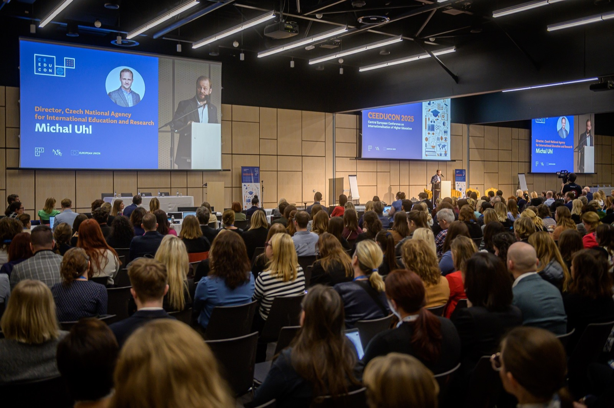

All-day conference
Plenary opening, thematic sessions and workshops across the halls of O2 universum.

CEEDUCON 2026 · CZECHIA
Two days of practical exchange for university leaders, international offices, policymakers and national agencies.
The conference
CEEDUCON connects university leaders, internationalisation professionals, policymakers, national agencies and practitioners from across Europe to exchange ideas, experiences and solutions.
From emerging challenges to proven approaches, the programme focuses on what is changing, what works in practice, and what we can achieve through stronger Central European cooperation.
Thematic areas
From responsible technology to the complete student journey — the 2026 programme connects the questions that matter most to international higher education right now.
AI, digitalisation, data and new tools for smarter internationalisation — with academic values and human judgement in focus.
Explore themeHow can universities use AI, digitalisation and data responsibly while preserving academic values and human judgement?
Key topics include AI in international offices and project work, data-driven strategies and evaluation, responsible data use, digital partnerships and staff skills.
Funding, safety, wellbeing and inclusion — removing barriers to meaningful international experiences for students and staff.
Explore themeHow can universities remove structural, social and financial barriers while creating safe, inclusive and meaningful international experiences?
Key topics include housing, mobility safety and visas, wellbeing and crisis response, funding, inclusive participation, Green Erasmus and mobility quality.
Strategic cooperation, European University alliances and equitable partnerships across global regions.
Explore themeHow can universities build sustainable partnerships that balance strategic priorities, mutual benefit and equitable collaboration?
Key topics include European University alliances, regional and global networks, capacity building, Global Gateway, BIPs, joint degrees and more equal partnerships.
The student journey end to end — admissions, support, employability, alumni relations and long-term success.
Explore themeHow can universities connect recruitment, admissions, support and alumni engagement into one coherent student-centred strategy?
Key topics include targeted recruitment, transparent admissions, onboarding, integration and support, retention, employability, alumni relations and stakeholder engagement.
CEEDUCON in motion
Step inside CEEDUCON and experience the plenaries, practical sessions and conversations that connect the international higher education community.
Watch on YouTubeConference atmosphere
Plenaries, workshops and informal conversations make CEEDUCON a practical meeting point for the international higher education community.
Programme 2026
The preliminary room-by-room programme is online — sessions, workshops and speakers for both conference days.
Plenary opening, thematic sessions and workshops across the halls of O2 universum.
An evening to build the partnerships the daytime sessions talk about.
A second full day of sessions, practical exchange and closing plenary.
Browse the two-day programme — 70+ sessions and workshops across nine rooms. Details remain subject to change.
Open the programmePlan ahead
Venue, transport from the airport and stations, accessibility and accommodation tips.
For speakersSession expectations, onsite delivery, timeline and speaker support in one overview.
Media kitDownload approved visuals, find press updates and contact the team for media requests.
Organisers
CEEDUCON is organised by DZS — the Czech National Agency for International Education and Research — in co-operation with partner organisations across the region. Reach the team at ceeducon@dzs.cz.
OeAD · DAAD · FRSE · SAAIC · Tempus Public Foundation